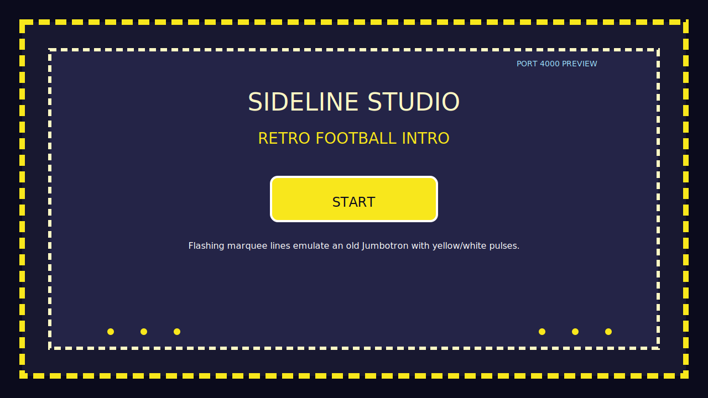
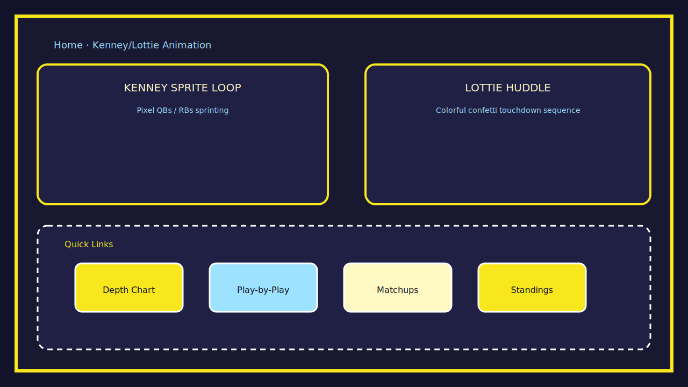
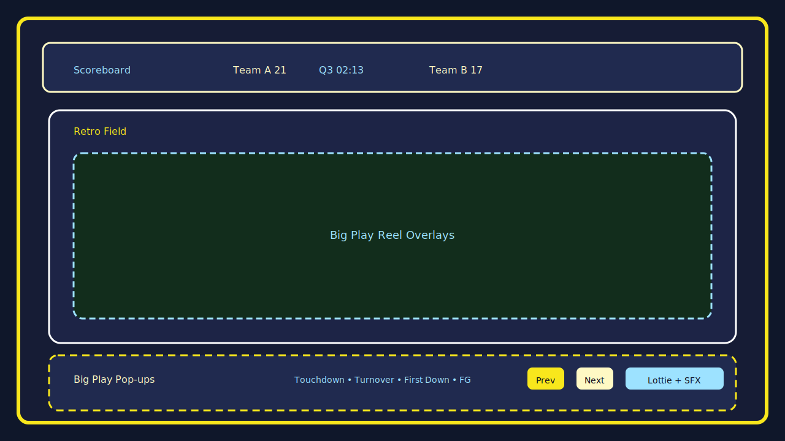
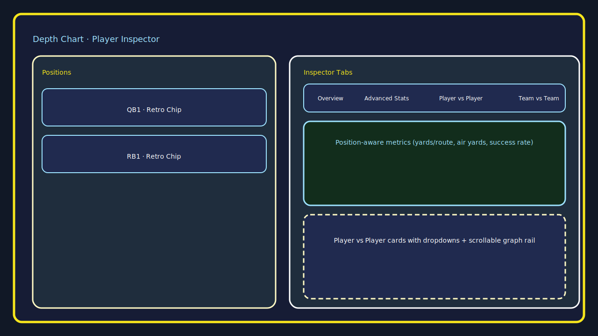

Open the SVGs below or click through to download. Each mockup uses the retro jumbotron palette and can be viewed directly in the browser without extra tooling.

Start screen – flashing marquee with Start button.

Home – Kenney/Lottie hero panels with retro CTA chips.

Play-by-play – scoreboard, retro field, and big-play pop-ups.

Depth chart – inspector tabs with advanced stats and comparisons.Standings, betting, and injuries – tables, props carousel, and timelines.